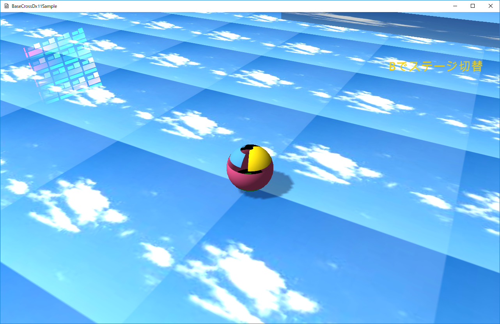
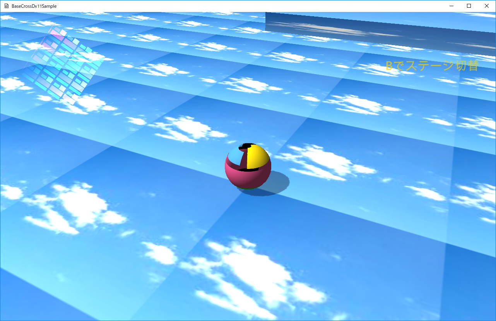
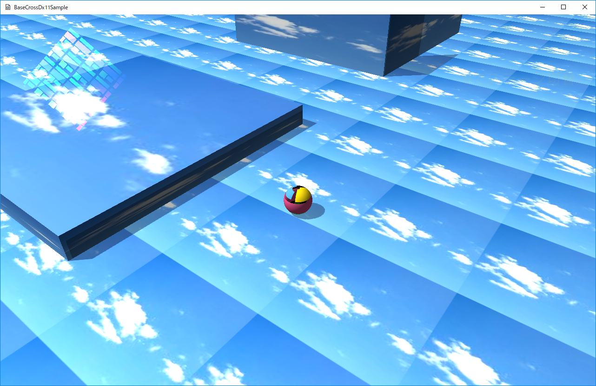

０２．シンプルバージョンでゲームの実装(Dx11版)
０２３．影（シャドウマップ）の実装(Dx11版)
このサンプルはSimplSample023というディレクトリに含まれます。BaseCrossDx11.slnというソリューションを開くとDx11版が起動します。
このサンプルはDx11版しかありません。Dx12版はありませんのでご了承ください。
サンプルを起動すると以下の画面が現れます。コントローラで操作でき、Aボタンでジャンプします。Bボタンで、いわゆるステージの切り替えができます。
なお、前項で紹介したRigidbodyは実装されてませんので、衝突処理を実装する場合は、前項の実装などを追加する必要があります。

図0023a
【サンプルのポイント】
このサンプルのポイントは影の送出と受け止めです。影は影を出すほうと影を受け止めるほうのセットで実装します。影の送出はシャドウマップという手法で行います。影の受け止めはシャドウマップとオブジェクトの描画の合成で行います。以下がポイントです。１、シャドウマップを書き込みむ方法 ２、シャドウマップを受け止め、描画する方法 ３、シャドウマップの細かさ
■１、シャドウマップを書き込みむ方法■
シャドウマップはステンシルバッファという領域に書き込みます。シャドウマップで使用するステンシルバッファは、通常の描画に使用するバックバッファとは別に存在し、BaseCrossシンプルバージョンでも、あらかじめ準備はされています。しかしその領域に書き込むためには、シェーダーを記述しなければいけません。
まず、シャドウマップで使用するステンシルバッファの準備ですが、ゲームステージのOnCreate()関数で、以下のように記述します。
void GameStage::OnCreate() {
//描画デバイスの取得
auto Dev = App::GetApp()->GetDeviceResources();
Dev->GetShadowMapRenderTarget(2048.0f);
//中略
//プレイヤーの作成
AddGameObject<Player>(
18,
L"TRACE_TX",
true,
Vec3(0.0f, 0.125f, 0.0f)
);
//シャドウマップ描画オブジェクトの作成
AddGameObject<ShadowmapDrawObject>();
//PNT描画オブジェクトの作成
AddGameObject<PNTDrawObject>();
//PNTシャドウ描画オブジェクトの作成
AddGameObject<PNTShadowDrawObject>();
//中略
}
また、描画オブジェクトは３つ使用します。３Ｄオブジェクトの追加後に追加します。
続いて、ゲームステージのOnDrawStage()関数ですが以下のように記述します。
void GameStage::OnDrawStage() {
//描画デバイスの取得
auto Dev = App::GetApp()->GetDeviceResources();
Dev->ClearDefaultViews(Col4(0, 0, 0, 1.0f));
Dev->ClearShadowmapViews();
Dev->StartShadowmapDraw();
for (auto& v : GetGameObjectVec()) {
//各オブジェクトの描画
v->OnDrawShadowmap();
}
Dev->EndShadowmapDraw();
//デフォルト描画の開始
Dev->StartDefaultDraw();
for (auto& v : GetGameObjectVec()) {
//各オブジェクトの描画
v->OnDraw();
}
//自分自身の描画
this->OnDraw();
//デフォルト描画の終了
Dev->EndDefaultDraw();
}
GameStage::OnDrawStage()では上記のように、各オブジェクトのOnDrawShadowmap()関数を呼び出しています。各オブジェクは、このタイミングでシャドウマップへの書き込みを行います。
OnDrawShadowmap()関数は仮想関数です、各オブジェクトの親クラスのOnDrawShadowmap()関数は未定義（何もしない）ですので、シャドウマップを書き込む場合は各オブジェクトで多重定義します。例えば、プレイヤーのOnDrawShadowmap()関数は以下のようになります。
void Player::OnDrawShadowmap() {
auto PtrGameStage = GetStage<GameStage>();
//ワールド行列の決定
Mat4x4 World;
World.affineTransformation(m_Scale, Vec3(0, 0, 0),
m_Qt, m_Pos);
auto shptr
= PtrGameStage->FindTagGameObject<ShadowmapDrawObject>(L"ShadowmapDrawObject");
shptr->AddDrawMesh(
m_SphereMesh,
World
);
}
FindTagGameObject()関数はテンプレート関数となっており、Stageクラス（GameStageの親）で以下のように定義されています。
template<typename T>
shared_ptr<T> FindTagGameObject(const wstring& TagName) const {
for (auto& v : GetGameObjectVec()) {
if (v->FindTag(TagName)) {
auto shptr = dynamic_pointer_cast<T>(v);
if (shptr) {
return shptr;
}
}
}
throw BaseException(
L"オブジェクトが見つかりません",
TagName,
L"Stage::FindGameObject()"
);
return nullptr;
}
SimpleSample022以降のサンプルでは、描画オブジェクトを通常のオブジェクトと同様にゲームオブジェクトとして作成しています。各オブジェクトの描画処理（あるいはシャドウマップの描画処理）では、このテンプレート関数を使って、自分を描画する描画オブジェクトを取り出し、そこに情報を登録します。
各描画オブジェクトは、1ターン内で登録されたデータをもとに、各描画方法でまとめて描画します。
前項のサンプルまでは描画オブジェクトは（３Ｄ処理に限って言えば）、PNTDrawObjectのみでした。しかし、このサンプルでは、３種類の描画オブジェクトがあります。
１、ShadowmapDrawObjectクラス ２、PNTDrawObjectクラス ３、PNTShadowDrawObjectクラス
２のPNTDrawObjectクラスは前項までと同じです。１はシャドウマップの書き込みに使用するクラスです。以下のような宣言になっています。
//--------------------------------------------------------------------------------------
/// シャドウマップ描画に使用する構造体
//--------------------------------------------------------------------------------------
struct ShadowmapObject {
shared_ptr<MeshResource> m_MeshRes;
Mat4x4 m_WorldMatrix;
ShadowmapObject() :
m_MeshRes(nullptr),
m_WorldMatrix()
{}
};
//--------------------------------------------------------------------------------------
/// シャドウマップの描画クラス
//--------------------------------------------------------------------------------------
class ShadowmapDrawObject : public GameObject {
vector<ShadowmapObject> m_ShadowmapObjectVec;
public:
static float m_LightHeight; //ライトの高さ（向きをこの値で掛ける）
static float m_LightNear; //ライトのNear
static float m_LightFar; //ライトのFar
static float m_ViewWidth;
static float m_ViewHeight;
//--------------------------------------------------------------------------------------
/*!
@brief コンストラクタ
@param[in] StagePtr ステージのポインタ
*/
//--------------------------------------------------------------------------------------
ShadowmapDrawObject(const shared_ptr<Stage>& StagePtr);
//--------------------------------------------------------------------------------------
/*!
@brief デストラクタ
*/
//--------------------------------------------------------------------------------------
virtual ~ShadowmapDrawObject();
//--------------------------------------------------------------------------------------
/*!
@brief 描画するオブジェクトを追加する
@param[in] MeshRes メッシュ
@param[in] WorldMat ワールド行列
@return なし
*/
//--------------------------------------------------------------------------------------
void AddDrawMesh(const shared_ptr<MeshResource>& MeshRes, const Mat4x4& WorldMat);
//--------------------------------------------------------------------------------------
/*!
@brief 初期化
@return なし
*/
//--------------------------------------------------------------------------------------
virtual void OnCreate() override;
//--------------------------------------------------------------------------------------
/*!
@brief 更新
@return なし
*/
//--------------------------------------------------------------------------------------
virtual void OnUpdate()override;
//--------------------------------------------------------------------------------------
/*!
@brief シャドウマップの描画処理(仮想関数)
@return なし
*/
//--------------------------------------------------------------------------------------
virtual void OnDrawShadowmap() override;
//--------------------------------------------------------------------------------------
/*!
@brief 描画
@return なし
*/
//--------------------------------------------------------------------------------------
virtual void OnDraw()override {}
};
それはAddDrawMesh()関数で行います。以下実体です。
void ShadowmapDrawObject::AddDrawMesh(const shared_ptr<MeshResource>& MeshRes,
const Mat4x4& WorldMat) {
ShadowmapObject Obj;
Obj.m_MeshRes = MeshRes;
Obj.m_WorldMatrix = WorldMat;
m_ShadowmapObjectVec.push_back(Obj);
}
この関数の呼び出しは、前述したように各オブジェクトのOnDrawShadowmap() 関数で行います。
それで実際のシャドウマップの書き込みですが、ShadowmapDrawObject::OnDrawShadowmap()関数で行います。以下実体です。
void ShadowmapDrawObject::OnDrawShadowmap() {
auto PtrGameStage = GetStage<GameStage>();
auto Dev = App::GetApp()->GetDeviceResources();
auto pID3D11DeviceContext = Dev->GetD3DDeviceContext();
auto RenderState = Dev->GetRenderState();
//各オブジェクト共通処理
//シェーダの設定
//頂点シェーダーのセット
pID3D11DeviceContext->VSSetShader(VSShadowmap::GetPtr()->GetShader(), nullptr, 0);
//ピクセルシェーダはセットしない！
pID3D11DeviceContext->PSSetShader(nullptr, nullptr, 0);
//ジオメトリシェーダの設定（使用しない）
pID3D11DeviceContext->GSSetShader(nullptr, nullptr, 0);
//インプットレイアウトのセット
pID3D11DeviceContext->IASetInputLayout(VSShadowmap::GetPtr()->GetInputLayout());
//描画方法（3角形）
pID3D11DeviceContext->IASetPrimitiveTopology(D3D11_PRIMITIVE_TOPOLOGY_TRIANGLELIST);
//ストライドとオフセット
UINT stride = sizeof(VertexPositionNormalTexture);
UINT offset = 0;
//個別処理
for (auto& v : m_ShadowmapObjectVec) {
//位置の取得
auto Pos = v.m_WorldMatrix.transInMatrix();
Vec4 LightDir4;
PtrGameStage->GetLightDir(LightDir4);
Vec3 LightDir(LightDir4.x, LightDir4.y, LightDir4.z);
Vec3 PosSpan = LightDir;
PosSpan *= 0.1f;
Pos += PosSpan;
//行列の定義
Mat4x4 World, LightView, LightProj;
//ワールド行列の決定
World.affineTransformation(
v.m_WorldMatrix.scaleInMatrix(), //スケーリング
Vec3(0, 0, 0), //回転の中心（重心）
v.m_WorldMatrix.quatInMatrix(), //回転角度
Pos //位置
);
LightDir = LightDir * -1.0;
Vec3 LightAt = PtrGameStage->GetCamera().m_CamerAt;
Vec3 LightEye = LightAt + (LightDir * m_LightHeight);
//ライトのビューと射影を計算
LightView = XMMatrixLookAtLH(LightEye, LightAt, Vec3(0, 1.0f, 0));
LightProj = XMMatrixOrthographicLH(m_ViewWidth, m_ViewHeight, m_LightNear, m_LightFar);
ShadowConstants Cb;
Cb.mWorld = bsm::transpose(World);
Cb.mView = bsm::transpose(LightView);
Cb.mProj = bsm::transpose(LightProj);
//コンスタントバッファの更新
pID3D11DeviceContext->UpdateSubresource(CBShadow::GetPtr()->GetBuffer(), 0, nullptr, &Cb, 0, 0);
//頂点バッファをセット
pID3D11DeviceContext->IASetVertexBuffers(0, 1,
v.m_MeshRes->GetVertexBuffer().GetAddressOf(), &stride, &offset);
//インデックスバッファのセット
pID3D11DeviceContext->IASetIndexBuffer(v.m_MeshRes->GetIndexBuffer().Get(),
DXGI_FORMAT_R16_UINT, 0);
//コンスタントバッファの設定
ID3D11Buffer* pConstantBuffer = CBShadow::GetPtr()->GetBuffer();
ID3D11Buffer* pNullConstantBuffer = nullptr;
pID3D11DeviceContext->VSSetConstantBuffers(0, 1, &pConstantBuffer);
//コンスタントバッファをピクセルシェーダにセット
pID3D11DeviceContext->PSSetConstantBuffers(0, 1, &pNullConstantBuffer);
//描画
pID3D11DeviceContext->DrawIndexed(v.m_MeshRes->GetNumIndicis(), 0, 0);
}
//後始末
Dev->InitializeStates();
m_ShadowmapObjectVec.clear();
}
影というのは光源からみてそのオブジェクトを描画する処理です。その際、ステンシルバッファには深度と呼ばれる情報を書き込みます。
ここで使用している頂点シェーダはクラスになっています。ProjectShader.h/cppでマクロでクラス化されています。VSShadowmapクラスです。このクラスはシングルトンなので
//頂点シェーダーのセット
pID3D11DeviceContext->VSSetShader(VSShadowmap::GetPtr()->GetShader(), nullptr, 0);
■２、シャドウマップを受け止め、描画する方法■
このようにしてステンシルバッファに書き込んだシャドウマップ（深度）をもとに、実際の描画処理では、シャドウマップの深度とそのオブジェクトの光源までの距離を比較して、影かどうかを判別します。描画オブジェクトはPNTShadowDrawObjectクラスを使用します。このクラスはPNTDrawObjectクラスの影対応版です。頂点シェーダにはVSPNTStaticShadowを使用し、ピクセルシェーダにはPSPNTStaticShadowもしくはPSPNTStaticShadow2を使用します。ピクセルシェーダが2種類あるのは自己影を出すか出さないかにより分けてます。そのオブジェクトがシャドオウマップを書き込み、かつ、影を受け止める場合、自己影といってモアレのようなもの（縞模様）がでてしまいます。そのため自己影防止用にはPSPNTStaticShadow2を使用します。
影描画のためには、コンスタントバッファに送る内容も複雑になります。
以下は、影描画に使うコンスタントバッファです。
struct PNTStaticShadowConstantBuffer
{
bsm::Mat4x4 World;
bsm::Mat4x4 View;
bsm::Mat4x4 Projection;
bsm::Col4 Emissive;
bsm::Col4 Diffuse;
bsm::Vec4 LightDir;
bsm::Vec4 LightPos;
bsm::Vec4 EyePos;
bsm::Mat4x4 LightView;
bsm::Mat4x4 LightProjection;
PNTStaticShadowConstantBuffer() {
memset(this, 0, sizeof(PNTStaticShadowConstantBuffer));
Diffuse = bsm::Col4(1.0f, 1.0f, 1.0f, 1.0f);
};
};
void PNTShadowDrawObject::SetConstants(DrawObject& DrawObj, PNTStaticShadowConstantBuffer& Cb) {
auto PtrGameStage = GetStage<GameStage>();
//行列の定義
bsm::Mat4x4 World, ViewMat, ProjMat;
//ワールド行列の決定
World = DrawObj.m_WorldMatrix;
//転置する
World.transpose();
//カメラを得る
PtrGameStage->GetCamera().GetViewProjMatrix(ViewMat, ProjMat);
Vec4 LightDir;
PtrGameStage->GetLightDir(LightDir);
//転置する
ViewMat.transpose();
//転置する
ProjMat.transpose();
Cb.World = World;
Cb.View = ViewMat;
Cb.Projection = ProjMat;
//ディフューズ
Cb.Diffuse = Col4(1.0f, 1.0f, 1.0f, 1.0f);
//エミッシブ加算。
Cb.Emissive = Col4(0.4f, 0.4f, 0.4f, 0);
//ライティング
Cb.LightDir = LightDir;
Cb.LightDir.w = 1.0f;
Cb.EyePos = PtrGameStage->GetCamera().m_CamerEye;
Cb.EyePos.w = 1.0f;
Vec3 CalcLightDir(LightDir.x, LightDir.y, LightDir.z);
CalcLightDir = -1.0 * CalcLightDir;
Vec3 LightAt = PtrGameStage->GetCamera().m_CamerAt;
Vec3 LightEye = CalcLightDir;
auto ShadowObj = PtrGameStage->FindTagGameObject<ShadowmapDrawObject>(L"ShadowmapDrawObject");
LightEye *= ShadowmapDrawObject::m_LightHeight;
LightEye = LightAt + LightEye;
Cb.LightPos = LightEye;
Cb.LightPos.w = 1.0f;
bsm::Mat4x4 LightView, LightProj;
//ライトのビューと射影を計算
LightView = XMMatrixLookAtLH(LightEye, LightAt, Vec3(0, 1.0f, 0));
LightProj = XMMatrixOrthographicLH(ShadowmapDrawObject::m_ViewWidth, ShadowmapDrawObject::m_ViewHeight,
ShadowmapDrawObject::m_LightNear, ShadowmapDrawObject::m_LightFar);
Cb.LightView = bsm::transpose(LightView);
Cb.LightProjection = bsm::transpose(LightProj);
}
最後に描画処理です。描画オブジェクトのPNTShadowDrawObject::OnDraw()関数です。内部で先ほどのSetConstants関数を呼び出しています。
void PNTShadowDrawObject::OnDraw() {
auto PtrGameStage = GetStage<GameStage>();
auto Dev = App::GetApp()->GetDeviceResources();
auto pD3D11DeviceContext = Dev->GetD3DDeviceContext();
auto RenderState = Dev->GetRenderState();
//サンプラーの準備
ID3D11SamplerState* pSamplerClamp = RenderState->GetLinearClamp();
ID3D11SamplerState* pSamplerWrap = RenderState->GetLinearWrap();
//個別処理
for (auto& v : m_DrawObjectVec) {
//コンスタントバッファの準備
PNTStaticShadowConstantBuffer Cb;
SetConstants(v, Cb);
//テクスチャ
pD3D11DeviceContext->PSSetShaderResources(0, 1,
v.m_TextureRes->GetShaderResourceView().GetAddressOf());
//コンスタントバッファの更新
pD3D11DeviceContext->UpdateSubresource(CBPNTStaticShadow::GetPtr()->GetBuffer(),
0, nullptr, &Cb, 0, 0);
//ストライドとオフセット
UINT stride = v.m_MeshRes->GetNumStride();
UINT offset = 0;
//頂点バッファのセット
pD3D11DeviceContext->IASetVertexBuffers(0, 1,
v.m_MeshRes->GetVertexBuffer().GetAddressOf(), &stride, &offset);
//インデックスバッファのセット
pD3D11DeviceContext->IASetIndexBuffer(v.m_MeshRes->GetIndexBuffer().Get(),
DXGI_FORMAT_R16_UINT, 0);
//描画方法（3角形）
pD3D11DeviceContext->IASetPrimitiveTopology(D3D11_PRIMITIVE_TOPOLOGY_TRIANGLELIST);
//コンスタントバッファの設定
ID3D11Buffer* pConstantBuffer = CBPNTStaticShadow::GetPtr()->GetBuffer();
ID3D11Buffer* pNullConstantBuffer = nullptr;
//頂点シェーダに渡す
pD3D11DeviceContext->VSSetConstantBuffers(0, 1, &pConstantBuffer);
//ピクセルシェーダに渡す
pD3D11DeviceContext->PSSetConstantBuffers(0, 1, &pConstantBuffer);
//シェーダの設定
pD3D11DeviceContext->VSSetShader(VSPNTStaticShadow::GetPtr()->GetShader(), nullptr, 0);
if (v.m_OwnShadowmapActive) {
//自己影がある場合
pD3D11DeviceContext->PSSetShader(PSPNTStaticShadow2::GetPtr()->GetShader(), nullptr, 0);
}
else {
//自己影がない場合
pD3D11DeviceContext->PSSetShader(PSPNTStaticShadow::GetPtr()->GetShader(), nullptr, 0);
}
//シャドウマップのレンダラーターゲット
auto ShadowmapPtr = Dev->GetShadowMapRenderTarget();
ID3D11ShaderResourceView* pShadowSRV = ShadowmapPtr->GetShaderResourceView();
pD3D11DeviceContext->PSSetShaderResources(1, 1, &pShadowSRV);
//シャドウマップサンプラー
ID3D11SamplerState* pShadowSampler = RenderState->GetComparisonLinear();
pD3D11DeviceContext->PSSetSamplers(1, 1, &pShadowSampler);
//インプットレイアウトの設定
pD3D11DeviceContext->IASetInputLayout(VSPNTStaticShadow::GetPtr()->GetInputLayout());
//オブジェクトのサンプラー
if (v.m_Wrap) {
pD3D11DeviceContext->PSSetSamplers(0, 1, &pSamplerWrap);
}
else {
pD3D11DeviceContext->PSSetSamplers(0, 1, &pSamplerClamp);
}
//デプスステンシルステート
pD3D11DeviceContext->OMSetDepthStencilState(RenderState->GetDepthDefault(), 0);
//ブレンドステート
if (v.m_Trace) {
//透明処理
pD3D11DeviceContext->OMSetBlendState(RenderState->GetAlphaBlendEx(), nullptr, 0xffffffff);
//透明処理の場合は、ラスタライザステートを変更して2回描画
//ラスタライザステート（裏面描画）
pD3D11DeviceContext->RSSetState(RenderState->GetCullFront());
//描画
pD3D11DeviceContext->DrawIndexed(v.m_MeshRes->GetNumIndicis(), 0, 0);
//ラスタライザステート（表面描画）
pD3D11DeviceContext->RSSetState(RenderState->GetCullBack());
//描画
pD3D11DeviceContext->DrawIndexed(v.m_MeshRes->GetNumIndicis(), 0, 0);
}
else {
//透明処理しない
pD3D11DeviceContext->OMSetBlendState(RenderState->GetOpaque(), nullptr, 0xffffffff);
//ラスタライザステート（表面描画）
pD3D11DeviceContext->RSSetState(RenderState->GetCullBack());
//描画
pD3D11DeviceContext->DrawIndexed(v.m_MeshRes->GetNumIndicis(), 0, 0);
}
}
//後始末
Dev->InitializeStates();
m_DrawObjectVec.clear();
}
■３、シャドウマップの細かさ■
さて、以下の２つの描画を比べてみてください。
図0023b

図0023c
下のほうが明らかに影が細かくなっています。これは、シャドウマップのビューの範囲を調整することで、細かくすることができます。ビューの範囲は、DrawObjects.cppの冒頭にある
float ShadowmapDrawObject::m_ViewWidth(8.0f);
float ShadowmapDrawObject::m_ViewHeight(8.0f);
しかし、ビューの範囲で調整した場合は、下図のように、影が出る範囲が小さくなります。

図0023d
奥のボックスの影が途中で切れているのがわかると思います。
ここで、GameStage::OnCreate()に記述した、以下の部分が関係してきます。
void GameStage::OnCreate() {
//描画デバイスの取得
auto Dev = App::GetApp()->GetDeviceResources();
Dev->GetShadowMapRenderTarget(2048.0f);
//中略
}
これらはゲームによって調整すべきでしょう。サンプルはビューは32.0f、シャドウマップサイズは2048.0fです。これはある程度広範囲の影を出せますが、荒くなります。しかし、動作には問題ありません。ですからシャドウマップのサイズは変えずにビューサイズで調整するというのが基本かと思います。
例えば、カメラの更新が記述されているGameStage::OnUpdate()に、以下のような記述を追加します。
void GameStage::OnUpdate() {
//中略
if (m_Camera.m_CameraArmLen < 10.0f) {
ShadowmapDrawObject::m_ViewHeight = 8.0f;
ShadowmapDrawObject::m_ViewWidth = 8.0f;
}
else {
ShadowmapDrawObject::m_ViewHeight = 32.0f;
ShadowmapDrawObject::m_ViewWidth = 32.0f;
}
}
}